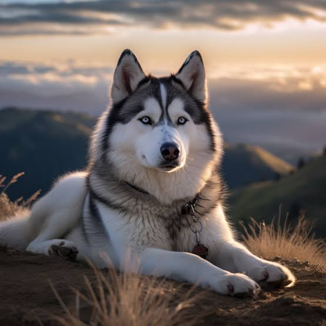
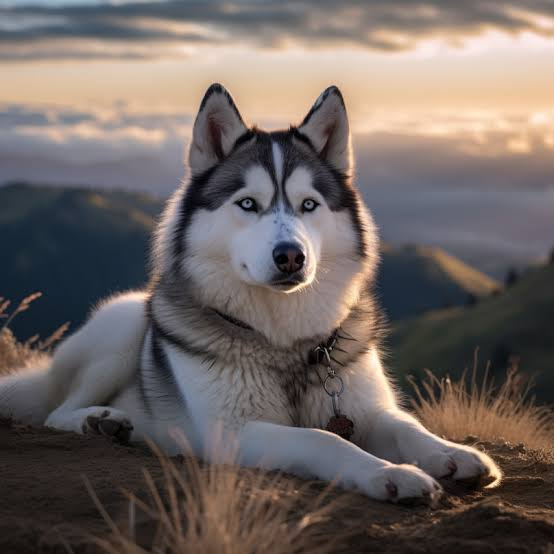

El husky siberiano es una raza de perro de trabajo originaria del norte de Siberia en Rusia. Este perro fue creado por la tribu Chukchi como perro de trabajo para tirar de los trineos a través de largas distancias durante sus partidas de caza, sirviendo así como vehículo de transporte rápido para las presas en la vuelta al poblado.
Alimentación: Hasta los tres meses de vida tu husky debe comer tres veces al día, por lo que reparte la cantidad diaria que te recomiende el veterinario en tres tomas. Entre los tres y los nueve meses hazlo en dos tomas y tras los nueve meses, solo necesitará alimentarse una vez al día. El agua fresca, deberá tenerla disponible en todo momento.
Salir a hacer sus necesidades. Acostumbra a tu nuevo amigo a salir a dar un paseo en cuanto pueda salir a la calle. Jugar y dormir estimula las ganas de hacer sus necesidades a los cachorros, así que aprovecha a sacarle también después de un rato de diversión o de la siesta.
El sueño, fundamental. Tu cachorro necesitará dormir mucho durante el día. Por eso, coloca su cama en un sitio tranquilo donde pueda dormir cuando quiera pero que no esté demasiado alejado para que podáis vigilarle.
Cepillado del pelo, sin baño. El husky es un perro limpio por naturaleza, por lo que, aunque debes bañarle lo menos posible, sí requiere un cepillado una vez a la semana. Aprovecha para limpiar y revisar sus orejas y dientes.
Ejercicio. Necesita entre 30 y 60 minutos de ejercicio vigoroso diario. Correr, jugar, perseguir cosas… Mantenle activo para evitar que se ponga triste, aúlle y comience a destruir tu casa.
Socializar. Preséntale a muchas personas y otros perros desde pequeño, aprenderá a interactuar correctamente con los demás. Así será un husky adulto equilibrado.
 
